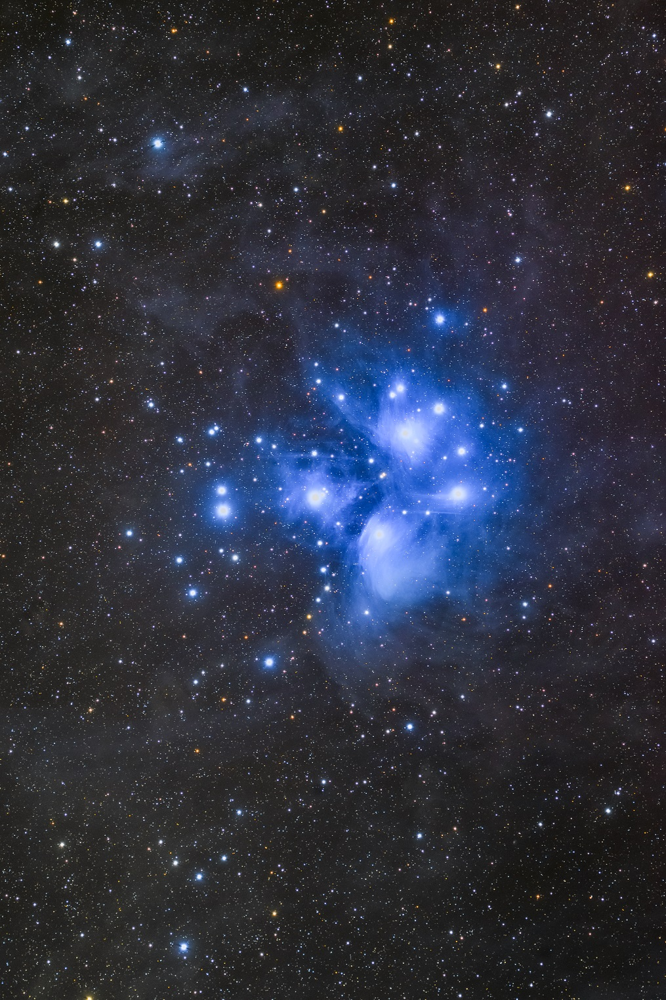
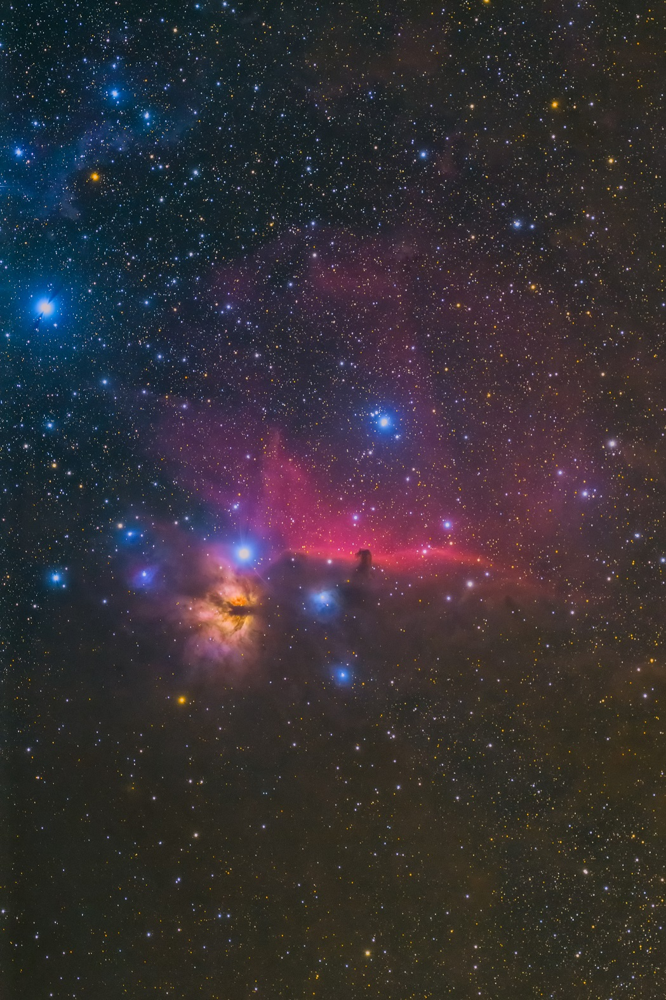

<!DOCTYPE html>
<html>

<head><meta name="generator" content="Hexo 3.8.0">
  <meta charset="utf-8">
  
  <title>【遠征記】2020年10月 いろいろ | ほしよみ大学生のブログ</title>
  <meta name="viewport" content="width=device-width">
  <meta name="description" content="あいさつこんにちは．9月は天気も悪く一度も遠征に行けずじまいでしたので，その鬱憤を晴らすが如く10月後半はたくさん遠征をしたので，ブログに書き留めておこうと思います．">
<meta name="keywords" content="写真,天体写真,遠征記">
<meta property="og:type" content="article">
<meta property="og:title" content="【遠征記】2020年10月 いろいろ">
<meta property="og:url" content="http://dabokun.github.io/2020/10/29/00000039-2020-10/index.html">
<meta property="og:site_name" content="ほしよみ大学生のブログ">
<meta property="og:description" content="あいさつこんにちは．9月は天気も悪く一度も遠征に行けずじまいでしたので，その鬱憤を晴らすが如く10月後半はたくさん遠征をしたので，ブログに書き留めておこうと思います．">
<meta property="og:locale" content="ja">
<meta property="og:image" content="http://dabokun.github.io/2020/10/29/00000039-2020-10/card.jpg">
<meta property="og:updated_time" content="2020-10-29T10:08:02.516Z">
<meta name="twitter:card" content="summary_large_image">
<meta name="twitter:title" content="【遠征記】2020年10月 いろいろ">
<meta name="twitter:description" content="あいさつこんにちは．9月は天気も悪く一度も遠征に行けずじまいでしたので，その鬱憤を晴らすが如く10月後半はたくさん遠征をしたので，ブログに書き留めておこうと思います．">
<meta name="twitter:image" content="http://dabokun.github.io/2020/10/29/00000039-2020-10/card.jpg">
<meta name="twitter:creator" content="@dabo_pic">
  
  <link rel="alternative" href="/atom.xml" title="ほしよみ大学生のブログ" type="application/atom+xml">
  
  
  <link rel="icon" href="/images/favicon.png">
  
  <link rel="stylesheet" href="/css/style.css">
  <!--[if lt IE 9]><script src="//html5shiv.googlecode.com/svn/trunk/html5.js"></script><![endif]-->
  
</head></html>
<body>
  <div id="container">
    <div class="mobile-nav-panel">
	<i class="icon-reorder icon-large"></i>
</div>
<header id="header">
	<h1 class="blog-title">
		<a href="/">ほしよみ大学生のブログ</a>
	</h1>
	<nav class="nav">
		<ul>
			<li><a href="/">Home</a></li><li><a href="/categories">Categories</a></li><li><a href="/tags">Tags</a></li><li><a href="/archives">Archives</a></li><li><a href="/about">About</a></li><li><a href="/work">Work</a></li>
			<li><a id="nav-search-btn" class="nav-icon" title="Search"></a></li>
			<li><a href="https://github.com/dabokun"></a>
			</li>
			<li><a href="https://twitter.com/dabo_pic"></a></li>
			<li><a href="/atom.xml" id="nav-rss-link" class="nav-icon" title="RSS Feed"></a>
			</li>
		</ul>
	</nav>
	<div id="search-form-wrap">
		<form action="//google.com/search" method="get" accept-charset="UTF-8" class="search-form"><input type="search" name="q" class="search-form-input" placeholder="Search"><button type="submit" class="search-form-submit">&#xF002;</button><input type="hidden" name="sitesearch" value="http://dabokun.github.io"></form>
	</div>
</header>
    <div id="main">
      <article id="post-00000039-2020-10" class="post">
	<footer class="entry-meta-header">
		<span class="meta-elements date">
			<a href="/2020/10/29/00000039-2020-10/" class="article-date">
  <time datetime="2020-10-29T07:23:07.000Z" itemprop="datePublished">2020-10-29</time>
</a>
		</span>
		<span class="meta-elements author">astr0dab0</span>
		<div class="commentscount">
			
			<a href="http://dabokun.github.io/2020/10/29/00000039-2020-10/#disqus_thread" class="article-comment-link">Comments</a>
			
		</div>
	</footer>
	
	<header class="entry-header">
		
  
    <h1 class="article-title entry-title" itemprop="name">
      【遠征記】2020年10月 いろいろ
    </h1>
  

	</header>
	<div class="entry-content">
		
		
		<div id="toc" class="toc-article">
			<p class="toc-title">目次</p>
			<ol class="toc"><li class="toc-item toc-level-3"><a class="toc-link" href="#あいさつ"><span class="toc-number">1.</span> <span class="toc-text">あいさつ</span></a></li><li class="toc-item toc-level-3"><a class="toc-link" href="#18-19日-原村-八ヶ岳自然文化園"><span class="toc-number">2.</span> <span class="toc-text">18-19日 原村 八ヶ岳自然文化園</span></a></li><li class="toc-item toc-level-3"><a class="toc-link" href="#20-21日-天城高原，仁科峠"><span class="toc-number">3.</span> <span class="toc-text">20-21日 天城高原，仁科峠</span></a></li><li class="toc-item toc-level-3"><a class="toc-link" href="#24-25日-大菩薩峠"><span class="toc-number">4.</span> <span class="toc-text">24-25日 大菩薩峠</span></a></li></ol>
		</div>
		
		<h3 id="あいさつ"><a href="#あいさつ" class="headerlink" title="あいさつ"></a>あいさつ</h3><p>こんにちは．9月は天気も悪く一度も遠征に行けずじまいでしたので，その鬱憤を晴らすが如く10月後半はたくさん遠征をしたので，ブログに書き留めておこうと思います．</p>
<a id="more"></a>
<h3 id="18-19日-原村-八ヶ岳自然文化園"><a href="#18-19日-原村-八ヶ岳自然文化園" class="headerlink" title="18-19日 原村 八ヶ岳自然文化園"></a>18-19日 原村 八ヶ岳自然文化園</h3><p>自分は基本的に所属していたサークルのうち来そうな人を毎回何人か観測に誘っているのですが，この日は誰も来る気配がなく，1年以上ぶり2回目のソロ観測に行くこととしました．行き先は清里を予定しており，周辺の某チェーン店で久々にほうとうを食していたところ，<a href="http://aramister.blog.fc2.com/" target="_blank" rel="noopener">Aramisさん</a>がワーケーションで原村にいらっしゃるということで，そちらに向かうことにしました．八ヶ岳高原ラインをひた走り（この道なかなかに楽しいです），20時半頃に原村に到着．八ヶ岳自然文化園には夜間は入れないようですが（確認とってないのでよくわかりませんが），すぐ近くのまるやち湖ほとりの駐車場は使えるようでした．初めて来る場所でしたが，空も開けていて良かったです．<br>久々の観測ということもあり，いくつか忘れ物をしてしまいました，Aramisさんには観測用ライトをお借りしまして，お世話になりました．それから水場が近くにあったのが誤算で，結露が心配されたのですが，ヒータ用のモバイルバッテリを忘れてしまいました．これは車のシガーソケット分岐を使うことでなんとか解決．<br>空は2時半頃まで晴れており，昴を子午線超えくらいまで露光できました．気温もよく冷え（明け方に2℃くらいまで），満足行く結果になったと思います．</p>
<p></p>
<div style="text-align: center;">
「M45 昴」<br>
2020年10月18日 午前22時04分～ 長野県原村 八ヶ岳自然文化園にて<br>
タカハシ FSQ-85EDP + フラットナー1.01x (455mm F5.4)<br>
Canon EOS 6D<br>
ISO 3200 / 180s * 30 = 90 min<br>
ISO 4000 / 180s * 60 = 180min<br>
Total: 270min<br>
タカハシ EM-11 Temma2Jr. ノータッチガイド<br>
ライトダーク: ライトと同条件 * 16<br>
フラット: 自宅にて ISO-100 / 1/1600s * 16<br>
フラットダーク: フラットと同条件 * 16<br>
RStacker / ステライメージ8 / Adobe Lightroom CC / Photoshop CC<br>
[<a href="https://www.astrobin.com/xnjfg4/" target="_blank" rel="noopener">AstroBin</a>], [<a href="https://www.flickr.com/photos/138311056@N05/50512320776/in/dateposted-public/" target="_blank" rel="noopener">Flickr</a>], [<a href="https://astrodabo.tumblr.com/post/632579378096848896/m45-pleiades-at-yatsugatake-natural-culture-park" target="_blank" rel="noopener">Tumblr</a>]<br><br>
</div>

<p>10時頃まで仮眠をとり，近くのもみの湯という温泉に入り，中村農場の親子丼を食べ（今年本当にこれを食べたかった），無事に夕方頃帰りました．</p>
<div class="twitter-wrapper"><blockquote class="twitter-tweet"><a href="https://twitter.com/dabo_pic/status/1318046872154468354" target="_blank" rel="noopener"></a></blockquote></div><script async defer src="//platform.twitter.com/widgets.js" charset="utf-8"></script>
<h3 id="20-21日-天城高原，仁科峠"><a href="#20-21日-天城高原，仁科峠" class="headerlink" title="20-21日 天城高原，仁科峠"></a>20-21日 天城高原，仁科峠</h3><p>この日はいつもお世話になっている方に自宅まで来てもらい，天城を目指すことにしました．伊東マリンタウンで夕飯を食べ，現地に到着してみると，晴れ予報だったにも関わらず雲が立ち込めていました．別働隊で来ていた後輩も合流し，西に移動すれば雲がとれるかも，ということで仁科峠に移動したのですが，ピーカン晴れというわけにもいかず…，撮影は諦めて眼視のテストをしようと思いました．</p>
<p>ところが……．<br><div class="twitter-wrapper"><blockquote class="twitter-tweet"><a href="https://twitter.com/dabo_pic/status/1318590351729328128" target="_blank" rel="noopener"></a></blockquote></div><script async defer src="//platform.twitter.com/widgets.js" charset="utf-8"></script><br><div class="twitter-wrapper"><blockquote class="twitter-tweet"><a href="https://twitter.com/dabo_pic/status/1318591953403957249" target="_blank" rel="noopener"></a></blockquote></div><script async defer src="//platform.twitter.com/widgets.js" charset="utf-8"></script></p>
<p>この前日に自宅でフラットを撮影し終え，赤道儀をしまおうとした際，あろうことか保管の向きを間違えたものと思われます．EM-11コントロールボックスのトグルスイッチ部分に強い負荷がかかり，基盤ごと奥に押し込まれてしまいました．電源は入るようですが下側のトグルスイッチはうんともすんとも言わず，コントローラーケーブルの通電も確認できず，追尾しているようなモーター音も聞こえない状態になってしまっていました．古いモデルですが，正直この設計はどうかなあと個人的には思います．まあ保管の向きを間違えた（であろう）私が悪いのですが…．この日は風も強く，タイムラプスだけ仕掛けてふて寝．そのタイムラプスも秒で結露していたので，まだ編集さえしていません笑．<br>帰宅後，翌日に即ショップに送り出しました．コントロールボックスを開けてみたところ，中の基盤も一部ひしゃげてしまっていると連絡がありました．自分はハードはからっきしなので，メーカー修理を依頼することに．修理が済んで無事に返ってくることを祈っています．</p>
<h3 id="24-25日-大菩薩峠"><a href="#24-25日-大菩薩峠" class="headerlink" title="24-25日 大菩薩峠"></a>24-25日 大菩薩峠</h3><p>赤道儀を壊したのにまだ行くのかと思われるかもしれませんが，私は「屋根裏天文舎」という小さな団体に所属していて，小型赤道儀であれば借りることができるのです（圧倒的感謝）．<br>この日は夜出発だったのですが，都内某所で今度は交通事故に逢いました（最近厄がついてるのか…？）．お仲間を拾うために駐車していたところ，けっこう良いスピードで右を抜けた車の左ミラーとこちらの右ミラーが接触，こちらはミラーカバーが吹き飛びました．路駐していたこちらにも問題がないわけではないですが，止まっていたわけですし法的には10:0になる案件のはず．私の家の車ではなかったし，相手も逃げることなく対応してくれたので，これ以上私からは何も言いませんが…．ただ他車絡みの事故に遭遇したのは初めてでしたので，事故時の対応は勉強になりました．自分も気をつけようと思います．<br>大菩薩峠には22時頃に到着しました．登山客っぽい車が多く停まっていたので，あまり騒がず，この日は馬頭を露光しました．</p>
<p></p>
<div style="text-align: center;">
「馬頭星雲，燃える木星雲」<br>
2020年10月18日 午前22時04分～ 山梨県 大菩薩峠にて<br>
タカハシ FSQ-85EDP + フラットナー1.01x (455mm F5.4)<br>
Canon EOS 6D<br>
ISO 6400 / 120s * 43 = 86 min<br>
タカハシ EM-10<br>
ライトダーク: ライトと同条件 * 16<br>
フラット: 自宅にて ISO-1600 / 1/250s * 16<br>
フラットダーク: フラットと同条件 * 16<br>
RStacker / ステライメージ8 / Adobe Lightroom CC / Photoshop CC<br>
[<a href="https://www.astrobin.com/xvqfgt/" target="_blank" rel="noopener">AstroBin</a>], [<a href="https://www.flickr.com/photos/138311056@N05/50531832738/in/dateposted-public/" target="_blank" rel="noopener">Flickr</a>], [<a href="https://astrodabo.tumblr.com/post/633038747779399680/the-horsehead-and-the-flame-nebula-taken-at" target="_blank" rel="noopener">Tumblr</a>]<br><br>
</div>

<p>地面が土だったので人が動くと簡単にブレブレになってしまい，歩留まりがかなり悪く，高感度短時間撮影にしても使えるフレームは総露光時間の半分以下になってしまいましたが，なんとか見られるものにはなったかと思います．</p>
<p>今回撮影した2枚とも個人的にはとても気に入っていて，後からここが良くないな，と思うことがほぼなくなりました．自己満の境地に達したように思っています．<br>色々ありましたが，来月以降は残されたメジャー天体であるところの「アイツ」をたっぷり露光していきたいと思っています．それでは…．</p>

		
	</div>
	<footer class="article-footer">
		<a href="https://twitter.com/intent/tweet?text=%E3%80%90%E9%81%A0%E5%BE%81%E8%A8%98%E3%80%912020%E5%B9%B410%E6%9C%88%20%E3%81%84%E3%82%8D%E3%81%84%E3%82%8D｜%E3%81%BB%E3%81%97%E3%82%88%E3%81%BF%E5%A4%A7%E5%AD%A6%E7%94%9F%E3%81%AE%E3%83%96%E3%83%AD%E3%82%B0&url=http://dabokun.github.io/2020/10/29/00000039-2020-10/" class="twitter-share-button" target="_blank" title="Twitter"></a>
		<script async src="https://platform.twitter.com/widgets.js" charset="utf-8"></script>

		<div id="fb-root"></div>
		<script async defer crossorigin="anonymous" src="https://connect.facebook.net/ja_JP/sdk.js#xfbml=1&version=v4.0"></script>
		<div class="fb-share-button" data-href="http://dabokun.github.io/2020/10/29/00000039-2020-10/" data-layout="button_count" data-size="small"><a target="_blank" href="https://www.facebook.com/sharer/sharer.php?u=https%3A%2F%2Fdabokun.github.io%2F&amp;src=sdkpreparse" class="fb-xfbml-parse-ignore">シェア</a></div>
	</footer>
	<footer class="entry-footer">
		<div class="entry-meta-footer">
			<span class="category">
				
  <div class="article-category">
    <a class="article-category-link" href="/categories/expedition/">遠征記</a>
  </div>

			</span>
			<span class=" tags">
				
  <ul class="article-tag-list"><li class="article-tag-list-item"><a class="article-tag-list-link" href="/tags/photography/">写真</a></li><li class="article-tag-list-item"><a class="article-tag-list-link" href="/tags/astrophotography/">天体写真</a></li><li class="article-tag-list-item"><a class="article-tag-list-link" href="/tags/expedition/">遠征記</a></li></ul>

			</span>
		</div>
	</footer>
	
	
<nav id="article-nav">
  
    <a href="/2999/12/31/99999999-notice/" id="article-nav-newer" class="article-nav-link-wrap">
      <strong class="article-nav-caption">Newer</strong>
      <div class="article-nav-title">
        
          お知らせ
        
      </div>
    </a>
  
  
    <a href="/2020/10/16/00000038-1d-gaussian-fitting/" id="article-nav-older" class="article-nav-link-wrap">
      <strong class="article-nav-caption">Older</strong>
      <div class="article-nav-title">
        
          ガウス関数のフィッティング―非線形最小二乗法
        
      </div>
    </a>
  
</nav>

	
</article>


<section id="comments">
	<div id="disqus_thread">
		<noscript>Please enable JavaScript to view the <a href="//disqus.com/?ref_noscript">comments powered by
				Disqus.</a></noscript>
	</div>
</section>

    </div>
    <div class="mb-search">
  <form action="//google.com/search" method="get" accept-charset="utf-8">
    <input type="search" name="q" results="0" placeholder="Search">
    <input type="hidden" name="q" value="site:dabokun.github.io">
  </form>
</div>
<footer id="footer">
	<h1 class="footer-blog-title">
		<a href="/">ほしよみ大学生のブログ</a>
	</h1>
	<span class="copyright">
		&copy; 2020 astr0dab0<br>
		Modify from <a href="http://sanographix.github.io/tumblr/apollo/" target="_blank">Apollo</a> theme, designed by <a href="http://www.sanographix.net/" target="_blank">SANOGRAPHIX.NET</a><br>
		Powered by <a href="http://hexo.io/" target="_blank">Hexo</a>
	</span>
</footer>
    
<script>
  var disqus_shortname = 'astr0dab0';
  
  var disqus_url = 'http://dabokun.github.io/2020/10/29/00000039-2020-10/';
  
  (function(){
    var dsq = document.createElement('script');
    dsq.type = 'text/javascript';
    dsq.async = true;
    dsq.src = '//go.disqus.com/embed.js';
    (document.getElementsByTagName('head')[0] || document.getElementsByTagName('body')[0]).appendChild(dsq);
  })();
</script>


<script src="//ajax.googleapis.com/ajax/libs/jquery/2.0.3/jquery.min.js"></script>


<link rel="stylesheet" href="/fancybox/jquery.fancybox.css" media="screen" type="text/css">
<script src="/fancybox/jquery.fancybox.pack.js"></script>


<script src="/js/script.js"></script>
  </div>
</body>
</html>